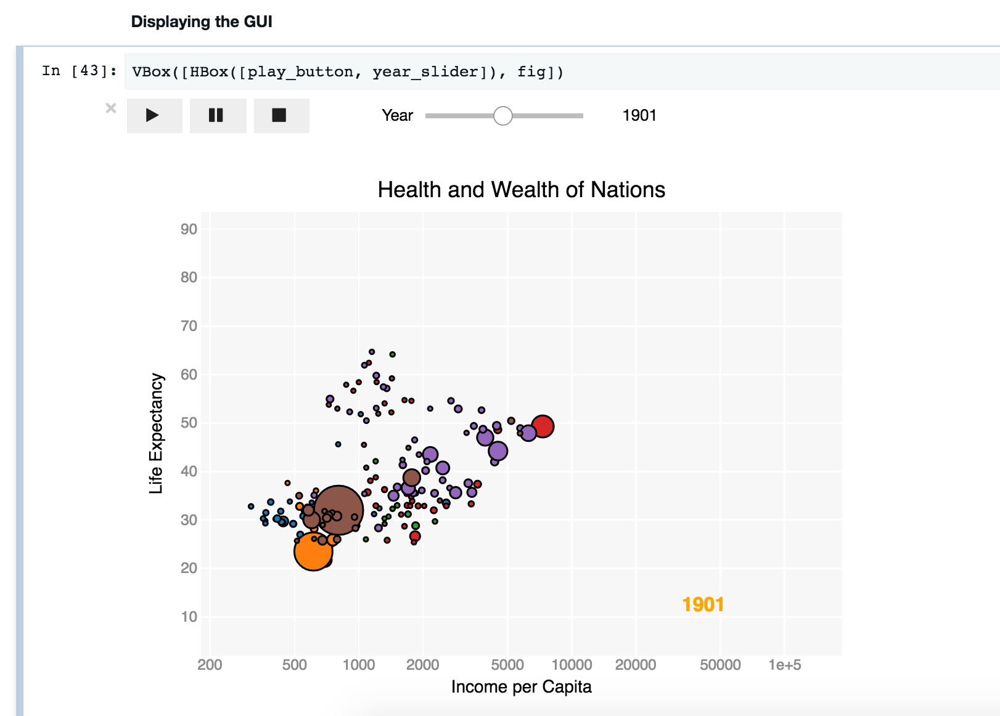

Code
I work on several open-source libraries, mostly revolving around data. Hopefully some of this will be useful to other people. See also my repository on github.
- gmaps
- Google maps in the IPython notebook
- Jupyter widgets
- Interactive data visualization in Jupyter notebooks
- Dash Bootstrap components
- Responsive layouts and components for Plotly Dash
Jupyter widgets
Interactive visualizations in Jupyter notebooks
Jupyter widgets let you build interactive data visualizations and graphical user interfaces in Jupyter notebooks. Widgets can be inserted into a data processing pipeline to understand data flows. This lets the data scientist explore the data interactively, leading to a shorter feedback loop.
Jupyter widgets are an important part of the Jupyter ecosystem. They have been developed alongside Jupyter notebook, with many of the same contributors.
I started contributing regularly to the development effort in May 2017, and was granted commit rights in July of the same year.
gmaps
Google maps in Jupyter notebooks
You have some latitude and longitude data in a Python list or a numpy array. You want to see where that data is. This plugin for the IPython notebook makes that easy.

Dash Bootstrap components
Responsive layouts and components for Plotly Dash
Dash Bootstrap components makes it easy to structure and build your Plotly Dash applications by providing layouts and high-level components.